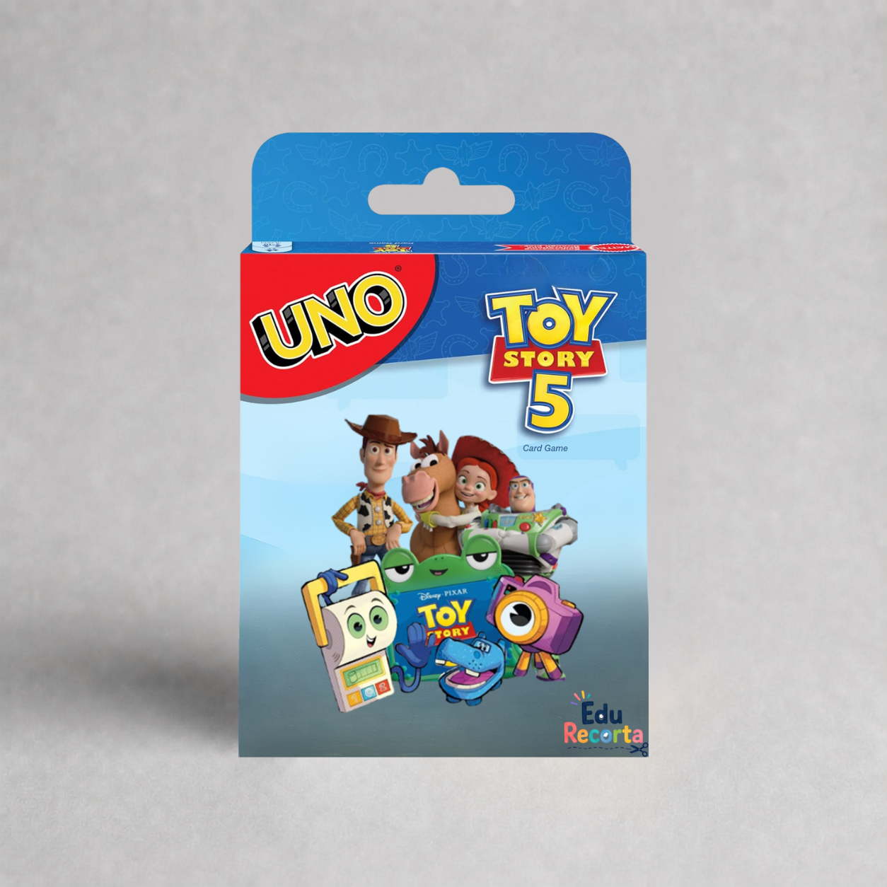
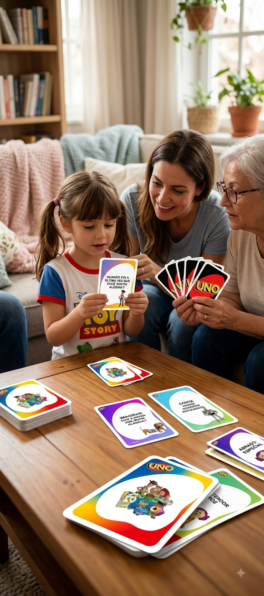
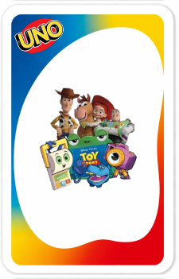
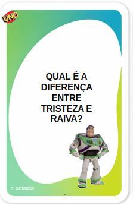
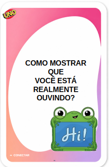

Baralho das
Emoções
Descubra como o Baralho das Emoções transforma a avaliação psicológica, a intervenção escolar e a rotina em casa em um momento de conexão e inteligência emocional — com uma dinâmica de cartas que as crianças já adoram.






Por que todas as crianças adoram jogar?
Quebra-gelo imediato
Cria vínculo instantâneo com a criança já no primeiro minuto da sessão.
Regulação emocional na prática
As cartas guiam a criança a reconhecer e expressar suas emoções de forma lúdica.
Pronto em poucos minutos
Sem preparação complicada. Imprima, recorte e comece a jogar em minutos.
Engajamento garantido
Crianças adoram jogos de cartas. O engajamento é natural e espontâneo.
Material prático, testado e de alta qualidade!
Arquivo em alta resolução
PDF pronto para imprimir em qualquer impressora, em casa ou no consultório.
Cartas de ação e emoção
Cartas temáticas ilustradas para reconhecer, nomear e expressar sentimentos.
Instruções inclusas
Um guia completo com as regras e sugestões de uso clínico e em família.
Acesso imediato
Você recebe por e-mail poucos segundos depois da compra.
Compraram e amaram!
Depoimentos de clientes satisfeitos.
"Sinceramente? Esperava mais um PDF pra guardar na gaveta. Logo na primeira sessão, um menino que só dizia 'não sei' começou a falar da raiva dele, e rindo. Hoje não trabalho mais sem."
"Comprei sem esperar muito e agora é minha filha que me chama pra jogar à noite. A gente conversa sobre as crises dela de um jeito bem mais calmo. Vale cada centavo, de verdade."
"Imprimi, plastifiquei e levei pra sala de aula. As crianças ficaram viciadas e finalmente consigo falar de emoções sem parecer sermão de adulto."
"O que eu mais gosto é não ter nada pra preparar. Chego, tiro as cartas e a criança já entra na brincadeira. Pra avaliação inicial, é ouro."
"Em casa com dois de 5 anos, toda crise virava caos. Agora usamos as cartas pra eles dizerem o que sentem antes de explodir. O clima em casa mudou."
"Uso com as crianças mais tímidas e funciona mesmo. Elas baixam a guarda porque acham que é só um jogo."
7 bônus de presente com o Kit Completo
Ferramentas prontas para imprimir que prolongam o jogo muito além das cartas.
Caderno de Educação Emocional
Um caderno completo de atividades para explorar cada emoção com delicadeza.
valor R$12 — De presenteA Roda das Emoções
A ferramenta para girar e dizer o que se sente, sem precisar de palavras.
valor R$9 — De presenteCartas da Respiração
6 respirações mágicas para ajudar a criança a voltar à calma.
valor R$9 — De presenteGuia "O que dizer quando…"
As palavras certas para cada situação difícil do dia a dia.
valor R$12 — De presenteContrato de Comportamento
Um acordo claro e motivador, assinado junto pela criança e pelo adulto.
valor R$7 — De presenteRegistro de Comportamento
O acompanhamento simples dos progressos, em casa e na escola.
valor R$7 — De presenteTécnicas de Comportamento
Estratégias concretas e gentis que funcionam de verdade.
valor R$12 — De presenteValor total dos bônus: mais de R$60 — hoje 100% de presente
Garanta agora o baralho das emoções! ✨⭐
🃏 Baralho dos Sentimentos — 80 cartas
Perguntas, desafios e situações para trabalhar emoções, comunicação, autorregulação, empatia e convivência.
🎁 + 5 BÔNUS EXCLUSIVOS
- 🎁 BÔNUS 1 — Diário das Emoções: 7 Dias Uma jornada de registro emocional para a criança identificar o que sentiu, onde sentiu no corpo, o que aconteceu, a intensidade da emoção e o que pode ajudá-la. Inclui fechamento da semana para observar avanços e necessidades.
- 🎁 BÔNUS 2 — Kit SOS das Emoções Cards recortáveis com estratégias rápidas de autorregulação, como soprar a vela, contar, respirar, pedir ajuda, beber água, desenhar o que sente, relaxar o corpo e pensar em soluções.
- 🎁 BÔNUS 3 — Semáforo da Autorregulação Método visual em quatro passos — Pare, Pense, Escolha e Aja — acompanhado de situações do cotidiano para ensinar a criança a transformar impulsos em escolhas mais conscientes.
- 🎁 BÔNUS 4 — Missões da Empatia Cartas com pequenas missões para praticar escuta, gentileza, cooperação, respeito, inclusão, ajuda ao próximo e reconhecimento dos sentimentos dos outros.
- 🎁 BÔNUS 5 — Guia com 10 Dinâmicas Prontas 10 atividades passo a passo para trabalhar expressão emocional, autorregulação, empatia, cooperação e autoconhecimento em casa, na escola ou em atendimentos. Inclui propostas como Chegada Emocional, Soprar a Vela, Escuta Ativa, Semáforo da Escolha, Missão da Empatia e Desenho da Solução.
ApenasR$9,90
Pagamento único · Acesso imediato
🎴 Quero o baralho!🔒 Pagamento seguro
SuperOferta
Baralho dos Sentimentos — 80 cartas
Perguntas, desafios e situações para trabalhar emoções, comunicação, autorregulação, empatia e convivência.
- 🦸 Caderno Coragem — Atividades para ajudar a criança a compreender o medo, identificar seus sinais e desenvolver estratégias para enfrentá-lo.
- 📦 Caixa do Medo — Cartões ilustrados e atividades para identificar, nomear e conversar sobre diferentes medos infantis.
- 🎭 Emoções em Jogo — Kit socioemocional com 15 personagens, 2 baralhos ilustrados com 60 cartas, jogos e atividades para reconhecer, nomear e expressar sentimentos.
- 📚 Jogo da Memória — Elementos da Narrativa — Recurso lúdico para aprender conceitos como personagens, narrador, enredo, tempo, espaço, conflito e desfecho.
- 😊 Jogo das Emoções — Cartas ilustradas com diferentes emoções para estimular identificação, expressão e conversas sobre sentimentos.
- 🧠 Jogo da Memória das Emoções — 24 cartas — 12 pares para desenvolver memória, atenção e reconhecimento das emoções.
- 🎲 Jogo do Medo — Jogo de trilha com tabuleiro, dado, peões, cartas e desafios para trabalhar medo, autonomia, autoconfiança e expressão emocional.
🎁 + 5 BÔNUS EXCLUSIVOS
- 🎁 BÔNUS 1 — Diário das Emoções: 7 Dias Uma jornada de registro emocional para a criança identificar o que sentiu, onde sentiu no corpo, o que aconteceu, a intensidade da emoção e o que pode ajudá-la. Inclui fechamento da semana para observar avanços e necessidades.
- 🎁 BÔNUS 2 — Kit SOS das Emoções Cards recortáveis com estratégias rápidas de autorregulação, como soprar a vela, contar, respirar, pedir ajuda, beber água, desenhar o que sente, relaxar o corpo e pensar em soluções.
- 🎁 BÔNUS 3 — Semáforo da Autorregulação Método visual em quatro passos — Pare, Pense, Escolha e Aja — acompanhado de situações do cotidiano para ensinar a criança a transformar impulsos em escolhas mais conscientes.
- 🎁 BÔNUS 4 — Missões da Empatia Cartas com pequenas missões para praticar escuta, gentileza, cooperação, respeito, inclusão, ajuda ao próximo e reconhecimento dos sentimentos dos outros.
- 🎁 BÔNUS 5 — Guia com 10 Dinâmicas Prontas 10 atividades passo a passo para trabalhar expressão emocional, autorregulação, empatia, cooperação e autoconhecimento em casa, na escola ou em atendimentos. Inclui propostas como Chegada Emocional, Soprar a Vela, Escuta Ativa, Semáforo da Escolha, Missão da Empatia e Desenho da Solução.
Kit Completo porR$19,90
Pagamento único · Acesso imediato
🎯 Quero o kit completo!🔒 Pagamento seguro · Entrega imediata
Garantia incondicional de 15 dias
Se por qualquer motivo você não ficar satisfeito com o material, basta nos escrever em até 15 dias que devolvemos 100% do seu dinheiro, sem perguntas.
Perguntas frequentes
O material é físico ou digital?
Digital. Você recebe o PDF por e-mail e imprime onde quiser, quantas vezes quiser.
A partir de que idade é indicado?
A partir dos 4 anos. As cartas são adequadas para crianças da educação infantil e do ensino fundamental.
Sou pai ou mãe, posso usar com meus filhos?
Com certeza. O jogo foi pensado tanto para profissionais quanto para famílias. As instruções trazem dicas para uso em casa.
Como recebo o acesso?
Logo após o pagamento você recebe um e-mail com o link para baixar o arquivo. Em poucos segundos.